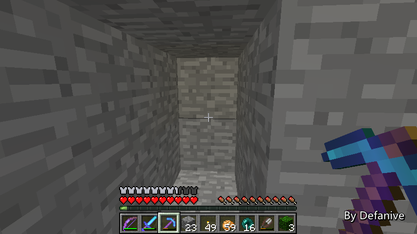
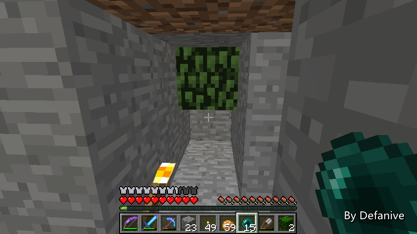
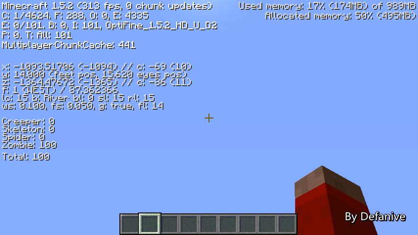
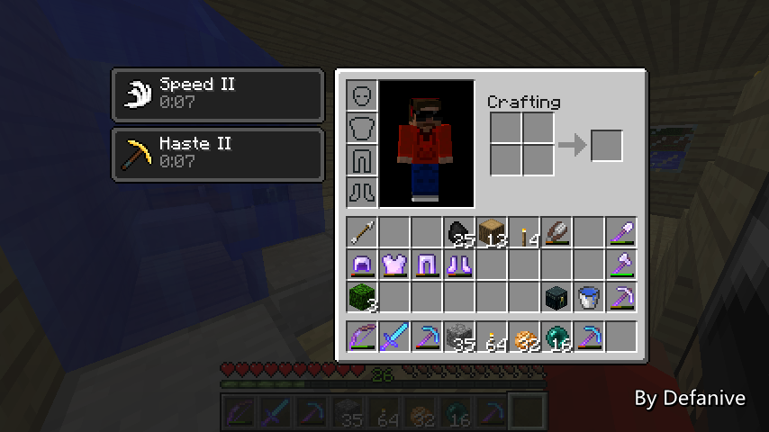

首页
上一页
231
232
233
234
235
236
236
237
238
239
240
241
下一页
末页
defanive2
无尽黑夜
14
至于/spawnarea指令有什么用呢
我们可以看到现在的刷怪面积有20245
当然，开始清理洞穴了，未清理前是24000左右
之前的面积是77526
因此海上的无效面积是地面的1/3
也就是说，在海上建的刷怪塔速度会是地面的3倍
——来自 MCLive
16727楼
2013-05-22 00:56
defanive2
无尽黑夜
14
如果有看我之前的刷怪塔原理讲解贴的话
当然都知道无效面积越小越好
现在的无效面积是20245，已经相对比较小了
要进一步提高速度
我准备把这17x17个chunk里的全部洞穴都点亮
争取把无效面积降到2000以下
同时点亮了外围一圈的chunk也能保证不会再卡住上限
——来自 MCLive
16728楼
2013-05-22 01:00
defanive2
无尽黑夜
14
当然，这个任务昨天就已经开始了
刷怪塔附近就有一个矿洞
于是从下方开始了清理
——来自 MCLive
16729楼
2013-05-22 01:02
defanive2
无尽黑夜
14
顺便在这里跟大家讲一下另外一种透视方法
这种透视方法比活塞+萤石/TNT的更简单
但是透视效果不是很好
不过由于建造速度快，很适合临时透视
——来自 MCLive

16730楼
2013-05-22 01:03
defanive2
无尽黑夜
14
靠着墙面放置一个树叶
然后往树叶下方的背面方块扔小黑眼即可
——来自 MCLive

16731楼
2013-05-22 01:04
defanive2
无尽黑夜
14
由于树叶也是透明方块
因此就可以进行透视了
这个矿洞是我昨天清理的矿洞
清理完之后无效面积从24000左右降到了20245
因此现在刷怪塔的速度提升了至少18.5%
——来自 MCLive
16732楼
2013-05-22 01:06
defanive2
无尽黑夜
14
直接向后走就可以离开透视
然后使用剪刀回收树叶即可
这种透视方法很简单，非常适合临时透视使用
缺点是视野比较小
——来自 MCLive
16733楼
2013-05-22 01:07
defanive2
无尽黑夜
14
之前透视过几次之后
看到还有4个比较大的矿洞需要清理
这个也算是比较大的项目之一
清理完之后可以对刷怪塔进行进一步的改造
如果能把无效面积降到0的话
1秒可以刷出79只怪物
即使减去5秒的怪物处理时间
速度也会有每秒15只
堪称速度最快的刷怪塔了
——来自 MCLive
16734楼
2013-05-22 01:11
defanive2
无尽黑夜
14
不管怎么说，今天先直播到这里吧
明天还有最后一门期末考
考完之后就有更多时间打游戏+直播了
——来自 MCLive
16735楼
2013-05-22 01:12
defanive2
无尽黑夜
14
刚刚玩了一个多小时的MC，都在探刷怪塔附近的洞穴
/spawnarea表示现在的刷怪面积已经降到168XX了
感觉探洞穴是个非常蛋疼的任务
头脑要保持注意力集中，长时间下来累得很快 = =
人工矿道就稍微舒服一点了，没有什么特别需要留意的
可以一边挖一边听音乐甚至看视频
PS 感觉这么多MC玩家里面我是探洞穴最少的了。。
实话玩到现在这几天才算是比较正式的探洞穴
之前只探过一两次，其余都是进去看两眼然后就封上。。
16766楼
2013-05-23 13:38
defanive2
无尽黑夜
14
今天mojang发布了新预览版了，13w21a
shift+右键 马/驴 可以打开他们的背包界面
从界面里面可以管理鞍、防具、箱子内容等
工具、药水等加上了特殊的标签
例如铁斧就会显示“+5伤害”
其他就是一堆BUG修复
1.6看起来暂时亮点不算很大
PS 有没有越来越RPG的感觉，特别是“+5伤害”这种东西。。
16784楼
2013-05-24 03:57
defanive2
无尽黑夜
14
UHC第四集已更新！
http://tieba.baidu.com/p/2316311751
16788楼
2013-05-24 14:36
defanive2
无尽黑夜
14
今天来直播一会MC吧！
其实下午已经玩了很久了，昨天也玩了一会
不过一直没什么特别的东西可以直播
就先来总结一下这几天我世界的情况吧
——来自 MCLive
16803楼
2013-05-25 09:43
defanive2
无尽黑夜
14
其实大家应该注意到
MC进行音效计算的时候似乎速度很差
经常大型或者复杂的音效计算就会导致fps骤降
例如洞穴声音，TNT爆炸等
而在option里面把音效调成OFF之后
fps就会有很大的提高
这个在性能不好的电脑上有明显的效果
——来自 MCLive
16808楼
2013-05-25 09:46
defanive2
无尽黑夜
14
例如现在在这里我放了100只僵尸
音效计算量比较大
——来自 MCLive
16809楼
2013-05-25 09:47
defanive2
无尽黑夜
14
此时站在这些僵尸上方，仰望天空
这样就不会渲染僵尸了
因此影响fps的主要因素将会是音效的计算
此时可以看到fps在130左右
——来自 MCLive
16811楼
2013-05-25 09:48
defanive2
无尽黑夜
14
把音效关闭，fps可以提升到150左右
——来自 MCLive
16812楼
2013-05-25 09:48
defanive2
无尽黑夜
14
MC使用的音效渲染引擎是openal
于是上网查了一下，发现MC使用的openal是非常旧的版本
这也就是导致音效计算效率慢的原因
——来自 MCLive
16815楼
2013-05-25 09:52
defanive2
无尽黑夜
14
不过，仔细查了一下
之所以openal使用的是旧版
是因为这个openal是被包含在lwjgl库里面的
lwjgl是一个java使用的轻量级游戏引擎
而MC一直都在使用非常旧的lwjgl库
因此自然里面的openal也非常旧了
——来自 MCLive
16816楼
2013-05-25 09:56
defanive2
无尽黑夜
14
MC里面带的lwjgl是2.4.2版的
而最新的lwjgl已经更新到了2.9.0版了
因此，如果大家玩MC遇到音效很多的时候产生了fps降低
可以考虑更新lwjgl
注意，有些版本的lwjgl和MC的代码会有冲突
不过目前最新的2.9.0没有问题
——来自 MCLive
16819楼
2013-05-25 10:01
defanive2
无尽黑夜
14
wiki上有一篇更新lwjgl的文章
去lwjgl的官网下载最新版，目前是2.9.0
然后在下载的文件中找到以上的文件
复制替换到\.minecraft\bin里面即可
其他操作系统下略有不同
具体可以看wiki上的文章
PS wiki的教程我是在E文版上找到的
不知道中文wiki有没有翻译过去
——来自 MCLive
16820楼
2013-05-25 10:04
defanive2
无尽黑夜
14
更新之后进MC不会有任何提示的
不过来到同一个世界
可以看到现在的fps已经有310+了
对比更新之前的130+
效率提升是非常明显的
——来自 MCLive

16821楼
2013-05-25 10:08
defanive2
无尽黑夜
14
而我现在在生存世界家里的fps也有80左右了
更新之前一般都只有不到50
原因就是我狗窝里的一堆狗不断的在叫 = =
——来自 MCLive
16822楼
2013-05-25 10:09
defanive2
无尽黑夜
14
昨天晚上大概就是升级+测试了一下lwjgl，效果很不错
今天下午的时候一直都在继续我的探矿洞任务
大约玩了2 3个小时左右
左上角的一个巨型废弃矿洞终于探索得差不多了
——来自 MCLive
16823楼
2013-05-25 10:14
defanive2
无尽黑夜
14
过程自然是非常艰辛
中途修了两次防具和武器
而且锋利IV的钻石剑在中途居然还坏掉了 = =
不过效果还是很好的
现在刷怪塔周围的无效面积已经降到12235了
已是开始探矿洞时（约24000）的一半
也就是说，此时刷怪塔的效率已经提升了近一倍了
——来自 MCLive
16825楼
2013-05-25 10:16
defanive2
无尽黑夜
14
不过探矿洞的成果还是很不错的
这么多煤矿都是用silk touch的稿子沿途挖的
当然还有更多的煤矿
不过这个箱子已经装不下了。。
——来自 MCLive
16826楼
2013-05-25 10:19
defanive2
无尽黑夜
14
当然也有其他的矿物收获
可以看到，探矿洞获得高级矿物的数量非常少
主要原因就是矿洞的y值普遍都不够低
探索了8000+的刷怪面积
那么至少有20000+的矿洞面积
收获仅仅12个钻石
可以看出，要获得高级矿物
探索矿洞的确没有人工矿道效率高
——来自 MCLive
16828楼
2013-05-25 10:21
defanive2
无尽黑夜
14
其他的收获包括N组的蜘蛛丝
从打蜘蛛网和杀蜘蛛得到的
——来自 MCLive
16829楼
2013-05-25 10:22
defanive2
无尽黑夜
14
也收获了一组的史莱姆球
在探清很多矿洞之后，普通怪物都无法刷出
因此刷出史莱姆的几率就大大提高
——来自 MCLive
16830楼
2013-05-25 10:23
defanive2
无尽黑夜
14
一套防具也坏得非常严重
总之探矿洞不是什么很好的游戏经历
一个人玩的话太无聊+压抑了
几个人一起边聊天边探会稍微好一点
——来自 MCLive

16831楼
2013-05-25 10:26
首页
上一页
231
232
233
234
235
236
236
237
238
239
240
241
下一页
末页